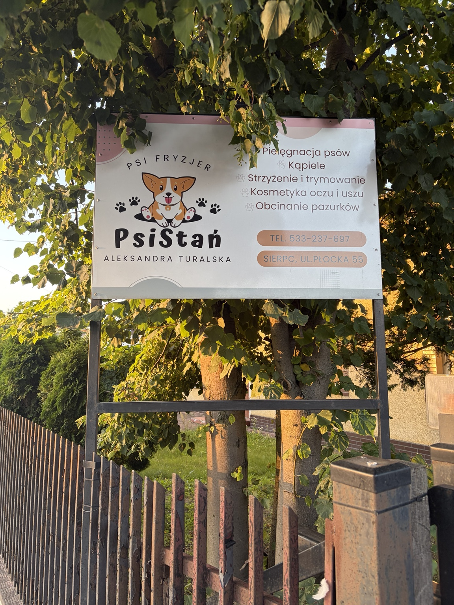

Psi fryzjer · Sierpc
Pielęgnacja, która
zostawia dobry ślad.
Psistań to psi fryzjer Aleksandry Turalskiej przy ul. Płockiej 55 w Sierpcu. Zadzwoń, aby umówić wizytę.

4 opinie
Usługi
To, co potrzebne
dla dobrej pielęgnacji.
Zakres usług jest prosty i czytelny — bez cennika ani obietnic na wyrost. O szczegóły wizyty najlepiej zapytać telefonicznie.
Psistań
Lokalny salon.
Jasno i po psisku.
Psistań to psi fryzjer w Sierpcu prowadzony przez Aleksandrę Turalską. W salonie dostępne są podstawowe usługi pielęgnacyjne dla psów.
Aktualności
Wyczesane psy.
Nowości bez sierści.
Nowości z Psistań znajdziesz w naszych mediach społecznościowych. Zero nadmuchanych historii — po prostu psy, pielęgnacja i to, co dzieje się w salonie.
Kontakt
Zadzwoń, aby
umówić wizytę.
Najprostszy sposób, żeby ustalić termin: telefon do Psistań. Jesteśmy przy ul. Płockiej 55 w Sierpcu.
533 237 697Otwórz lokalizację w mapie
Godziny otwarcia
Poniedziałek – piątek09:00–17:00
Sobota09:00–14:00
NiedzielaZamknięte